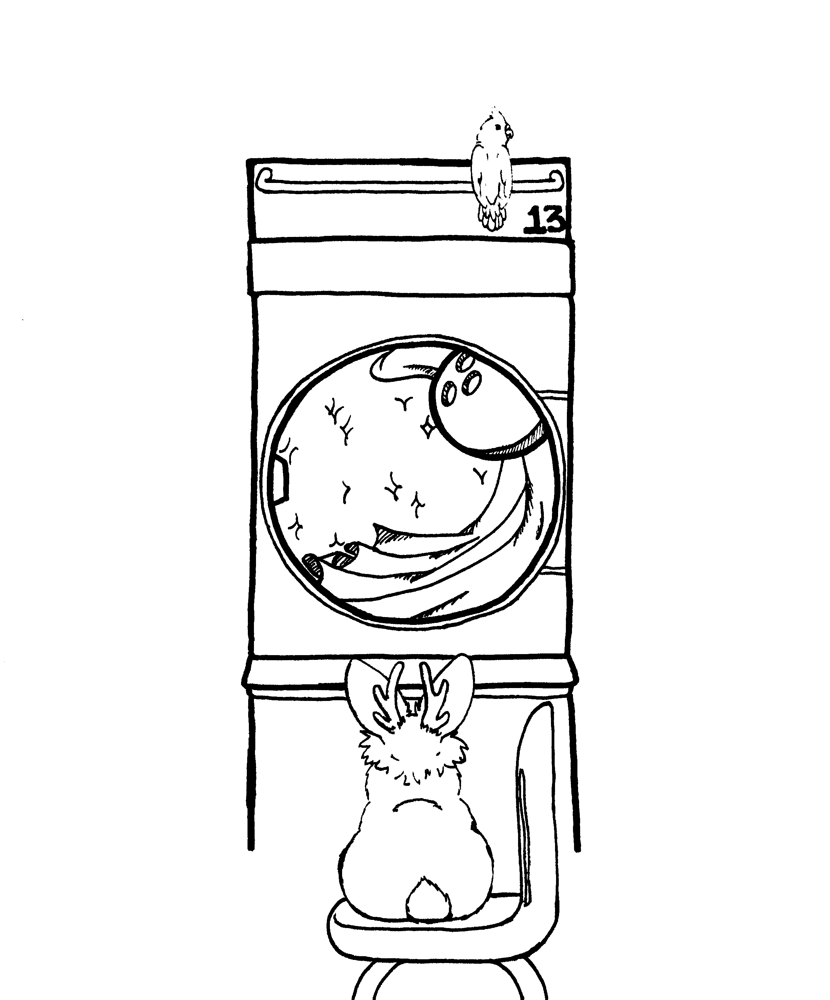
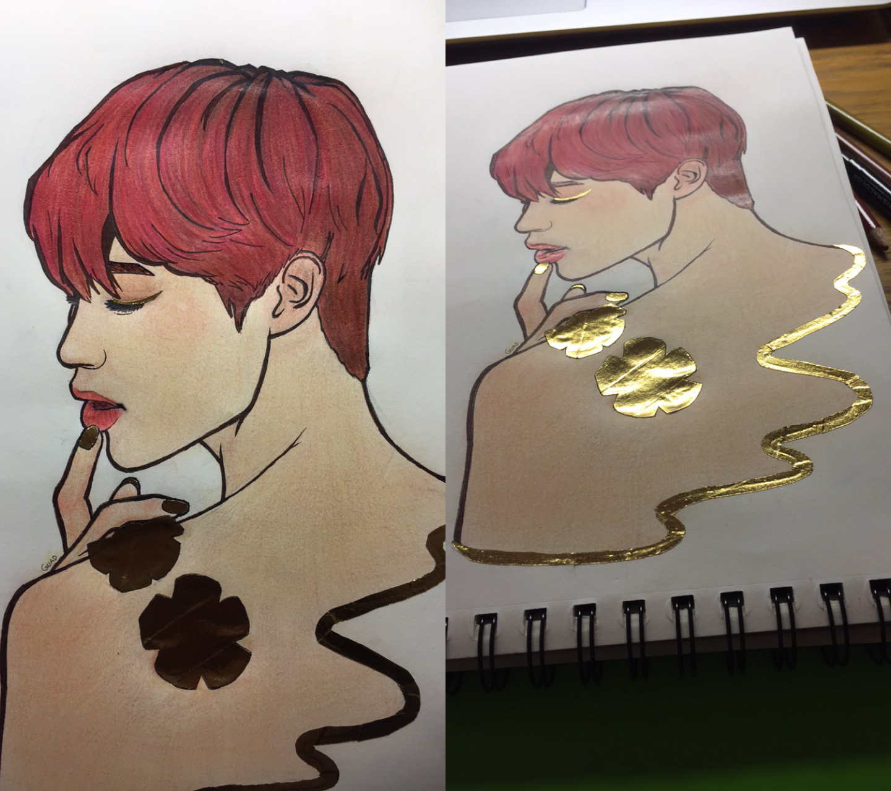

Here is some old art pieces.
This was art that I made with a friend in mind. They really like jackalopes and their nickname for me is Birdy, so that's why those two animals are there.
The urge to draw washing machines was strange, but it's what inspired this piece. Also, I found out that bowling can be fun.
This was fanart that I sent in to a show where one of my favorite artists were set to appear.
However, their appearance was cancelled when one of their labelmates passed away since the artists were close.
Still, it is a nice piece to pull out and look at from time to time since it's shiny. This effect was acheived using gold washi tape!